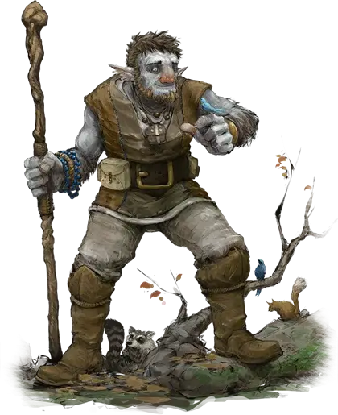

Фирболг
Firbolg

Дальние родственники великанов, первые фирболги бродили по первобытным лесам мультивселенной, и магия этих лесов вплелась в души фирболгов. Столетия спустя эта магия все еще находится внутри фирболга, даже того, кто никогда не жил под ветвями великого леса.
Магия фирболгов в основным скрытная, позволяющая их предкам проходить через лес, не тревожа его. Связь между фирболгом и дикой природой мира столь глубока, что они могут общаться с флорой и фауной.
Особенности Фирболга
Вы обладаете следующими особенностями.
Увеличение характеристик. Либо значение одной характеристики по вашему выбору увеличивается на 2, а другой — на 1, либо значение трёх различных характеристик по вашему выбору увеличивается на 1.
Возраст. Фирболги могут жить до 500 лет.
Вид существа. Вы — Гуманоид.
Размер. Ваш размер — Средний.
Скорость. Ваша базовая скорость ходьбы — 30 футов.
Магия фирболгов. Вы можете накладывать заклинания обнаружение магии [detect magic] и маскировка [disguise self] с помощью этой особенности. Когда вы накладываете эту версию заклинания маскировка [disguise self], вы можете казаться на 3 фута ниже или выше, чем обычно. После накладывания одного из этих заклинаний с помощью особенности вы должны закончить продолжительный отдых, прежде чем сможете вновь наложить его таким образом. Вы также можете накладывать эти заклинания, используя ячейки заклинаний подходящего уровня.
Интеллект, Мудрость или Харизма является вашей базовой характеристикой для этих заклинаний (выберите одну из них при выборе этой расы).
Незримая поступь. Бонусным действием вы можете магически стать невидимым до начала вашего следующего хода или пока вы не атакуете, не бросите кость урона или не заставите кого-то совершить спасбросок. Вы можете использовать эту особенность количество раз, равное вашему бонусу мастерства. Вы восстанавливаете все потраченные использования по окончании продолжительного отдыха.
Мощное телосложение. Вы считаетесь на один размер больше, когда определяются ваши грузоподъемность и вес, который вы можете толкать, тянуть или поднимать.
Язык зверей и листвы. У вас есть способность к ограниченному общению с животными и растениями. Они могут понимать значение ваших слов, хотя у вас нет никакой специальной способности понять их в ответ. Вы совершаете с преимуществом проверки Харизмы, чтобы на них повлиять.
Языки. Ваш персонаж может говорить, читать и писать на Общем и ещё одном языке, который по вашему мнению подходит для персонажа.